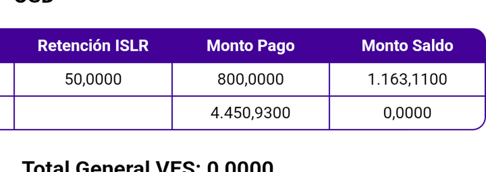
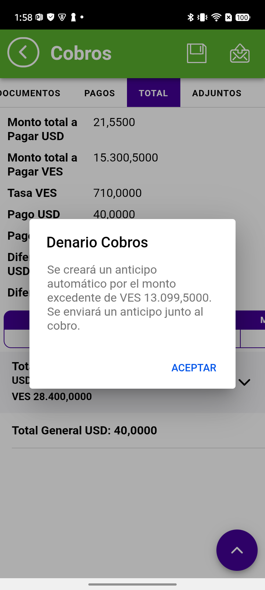

CONTROL DE CALIDADValidación de Cobros
28 de agosto de 2026
28 de agosto de 2026
CENTRAL EL PALMAR, S.A. · empresa 1002 · Anticipos, retenciones y alertas
| Alcance | Anticipo automático · alertas al enviar · regresión de la tabla de totales · riesgos de la versión |
| Registros de evidencia | 5 cobros enviados: 27145 a 27149 |
| Capas verificadas | Pantalla del móvil · modelo en memoria · base de datos de la nube |
| Tasa del día | 710,0000 VES = 1 USD |
La deuda de un documento baja por el pago más lo retenido. La aplicación sólo descuenta el pago.
Se montaron en la misma transacción (cobro 27149) para que la comparación sea directa:
| Documento | Escenario | Saldo | Retenido | Pago | Muestra | Debería |
|---|---|---|---|---|---|---|
0013000340 | retención + pago parcial | 1.963,11 | 150,00 | 800,00 | 1.163,11 | 1.013,11 |
0013000339 | CONTROL — sin retención | 4.450,93 | — | 4.450,93 | 0,0000 | 0,0000 |
0013000338 | retención + pago completo | 5.027,38 | 300,00 | 4.727,38 | 0,0000 | 0,0000 |

Las dos filas están en el mismo cobro, la misma pantalla y el mismo momento. La única diferencia entre ellas es la retención. Eso aísla la causa sin lugar a discusión.
Y el tercer escenario acota el disparador: con retención pero pago completo, el saldo cierra correctamente en cero. El defecto sólo aparece cuando se combinan retención y pago parcial.
| Capa | Valor | |
|---|---|---|
| Pantalla del móvil | 1.163,11 | ✗ inflado |
| Modelo en memoria | 1.963,11 | ✔ guarda el saldo íntegro |
| Base de datos de la nube | 1.163,11 | ✗ inflado |
| Web administrativa | — | ⛔ no verificada |
Este cliente tiene la configuración más exigente probada hasta ahora, porque las dos monedas del anticipo son distintas:
| Ajuste | Valor | Qué controla |
|---|---|---|
| ¿En qué moneda debe generarse el anticipo? | VES | la moneda en que se crea |
| Moneda para evaluar el monto mínimo | USD | la moneda del umbral |
| Monto mínimo excedido | 10 | 10 USD |
Si la aplicación confundiera ambos ajustes, un cobro en dólares generaría su anticipo en dólares. No ocurre:
| Cobro | Moneda del cobro | Diferencia | Anticipo | Moneda | Monto |
|---|---|---|---|---|---|
27145 | Bolívares | 11.693,00 VES | 27146 | VES | 11.693,00 |
27147 | Dólares | 18,45 USD | 27148 | VES | 13.099,50 |
El mensaje que ve el vendedor también sale en la moneda correcta:

El umbral también funciona: una diferencia de 7,04 USD no generó anticipo; una de 14,08 USD sí. El mínimo se evalúa en dólares, tal como está configurado.
| Caso | Escenario | Resultado |
|---|---|---|
| A1 | Sin monto | ✅ bloquea |
| A2 | Sin referencia (Efectivo) | ❌ no bloquea |
| A3 | Ambos vacíos | ✅ bloquea |
| A4 | Guardado y reabierto | ✅ bloquea |
| A5 | Todo completo | ✅ envía |
| ID | Riesgo evaluado | Resultado |
|---|---|---|
| R1 | Retención + diferencia positiva: ¿sobre qué base se calcula el anticipo? | ✅ correcto |
| R2 | IGTF + diferencia positiva | ⛔ no validado |
| R3 | Cobro de tipo Retención | ✅ correcto |
| R4 | Pago parcial + retención | ❌ es el defecto |
| R5 | Los dos importes en bolívares del anticipo | ✅ coinciden |
R1 confirma que el cálculo del anticipo es correcto: se hace sobre el neto después de la retención (5.027,38 − 300,00 = 4.727,38). R5 confirma que el descuadre de bolívares detectado en otro cliente no reproduce aquí: los tres importes del anticipo coinciden en 11.693,00.
| Ref | Tipo | Moneda | Monto | Para qué |
|---|---|---|---|---|
27145 | Cobro | VES | 20.000,00 | anticipo desde bolívares |
27146 | Anticipo | VES | 11.693,00 | generado automáticamente |
27147 | Cobro | USD | 40,00 | el caso decisivo |
27148 | Anticipo | VES | 13.099,50 | generado automáticamente |
27149 | Cobro | VES | 5.250,93 | retención + control |
Los cobros de apoyo de las alertas no llegan a enviarse. El guardado auxiliar se eliminó y el formulario de cobro tipo Retención se descartó sin guardar.
| # | Pendiente | Por qué importa |
|---|---|---|
| 1 | La web administrativa para el defecto de la retención | Es la cuarta capa: falta confirmar si el saldo inflado también se muestra allí |
| 2 | IGTF + diferencia positiva (R2) | El IGTF se aplica sobre el total a pagar; queda por ver si altera el excedente |
| 3 | A2 con Transferencia y Depósito | Sólo se midió con Efectivo, donde el número de recibo puede ser opcional por diseño |
| 4 | La empresa 1003 | Todo se corrió en la 1002 |
version_especial_21_cobros_20260828.cobros-version-especial.md.
Los importes se verificaron contra la base de datos de la nube.